How to get started as a complete beginner in game development
To start off I had chatGPT write me this little blurb to describe how things begin for most people:
"Embarking on the journey of game development often begins with an overwhelming sense of excitement and passion. As a beginner, the allure of creating worlds and interactive experiences fuels experimentation.
This phase involves delving into the basics of game development tools, tinkering with ideas, and laying the groundwork for what will become the foundation of one's game dev journey.
The initial stages are marked by the thrill of exploration and discovery, as budding game developers navigate the landscape of possibilities."
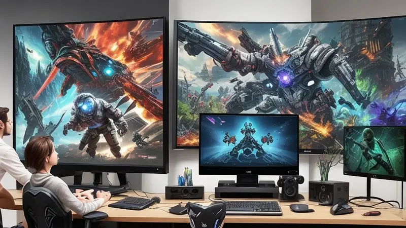
In other words, after you've played enough games you’ll likely awaken to the idea of making something yourself or improving something existing into a better version.
You'll begin with playful experiments in places of opportunity, something easy, something quick, something instantaneously gratifying and visible.
If all goes well and your attempt works out you'll feel a powerful sense of awe and encouragement.
The epiphany you get is: "Wow! I made this little change or new thing and it actually works!
Followed by: “...if I was able to do that I might be capable of doing something more too! This could be fun!".
And you get hooked by the allure of having the power to create stuff yourself, in your own style, with your preferences.
My beginnings - How the modding scene of a game I loved drew me in
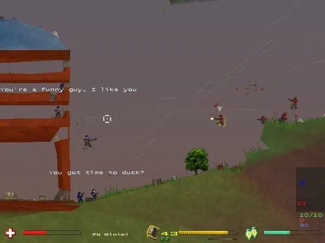
For me, I had been playing a PC video game that had an active online community of people creating new "skins" that replaced the original graphics and sounds of the game with different ones, creating an entirely new theme and feel to it. This would often feel like I was playing a whole new game.
The game in question was Soldat, a 2D action game about dudes with modern guns blasting each other for fun.
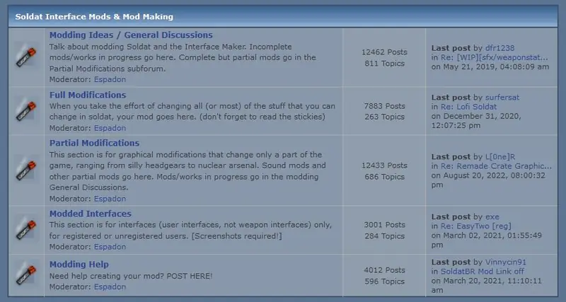
(Soldat Forums modding section with different subsections for talking about mods and sharing them with others. This was originally the best place to find the newest and coolest things for this game.)
Mod/Skin authors would post/upload these modifications onto the game's online forums where other people could download, install, play and enjoy these changes too. They could also comment and leave feedback to the author, giving thanks, sharing opinions or highlighting issues that could be fixed to improve it.
I had already been enjoying the game I had played a lot, but the more I played it, the more I had a desire for variety, more content, more novelty and new experiences. This made me want to try the mods I saw on the forums - at least the ones that appealed to my preferences the most.
Looking inside the files of the mods I was playing with
While playing with the mods I'd be excited and happy how the game now felt fresh and changed, satisfying my need for variety and evolution. As time went by and I tried more mods and played them a lot, gradually my initial excitement subsided and I started noticing small things that I wished could be changed. Sometimes these changes were not in line with what the mod author wanted so they wouldn't do that change for me. This meant I'd have to change it myself.
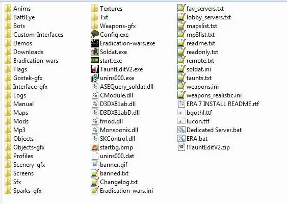
This led to a curiosity to look at the files and folders of the mod itself, as well as explore the folders and files of the game too. Luckily, this particular game was structured in a way where none of the art assets or the folder structure was hidden in any way. I could directly navigate to any folder and open any file like it was a photo album. I could even open the images in an image editor or open the text files in a text editor. Same with sound effects too.
By checking out some tutorials on how to use an image editor, text editor or audio editor, I could directly now create changes to the game's graphics directly. It was made so easy, clear and approachable that it did not require advanced knowledge to actually create a mod for the game.
This was back in 2003 when some games were coded natively only for Windows with no cross-compatibility with other operating systems. While this made it difficult to port one game to another operating system or a gaming console or a smartphone, it did however allow for structuring the game in this "raw/exposed/open way" as it was the most direct, easiest and straightforward way to do it back then.
Creative journeys start from a silly try
My first ever change was doing something silly; I made the rocket projectile graphic fired out of a rocket launcher be just a big red rectangle box.
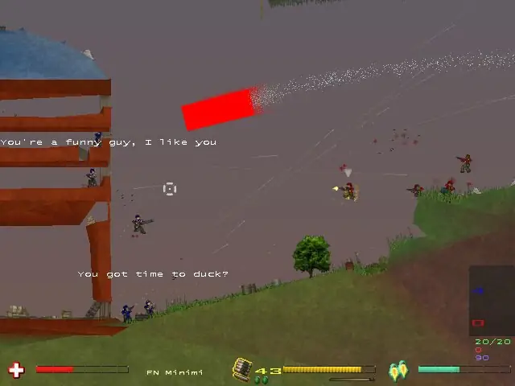
It was completely impractical, looked dumb and would get annoying in prolonged serious play, but it was a clear proof that I actually had the power to change something in the game myself. Previously I couldn't even dream of being able to do anything like that, as most games either did not allow this or it was exceedingly more complicated to even try.
It was funny and absurd too, I got a good laugh out of it because it was so outlandish - that kind of moment would never have happened in the original game itself.
This small success gave me motivation to try other changes. Going to make my own mod was still too overwhelming at this stage (I'd have to change roughly hundred different graphics and sound effects to create a complete mod comparable to what others had made and shared) so I opened the files of an existing mod and tried making changes in it, trying to make it "cooler" or "more complex".
In my case it was a futuristic mod that replaced all modern weapons with futuristic laser guns that had glowing energy lights on them. I just opened the image files for one gun and used a combination of color picker with pencil/paintbrush tool to simply add more energy lights by painting some pixels where I thought they could be added to. I saved my changes for one gun, tested it ingame and was happy with the results.
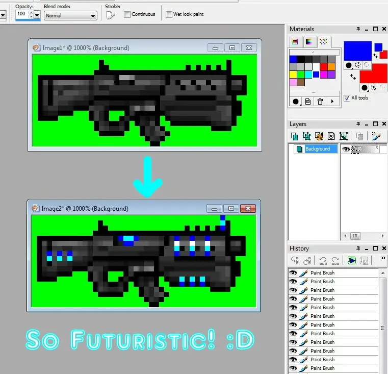
Then it snowballed from there where I did it for all guns. Then I explored other graphics and changed them to the best of my amateur abilities. Same with sound and text files.
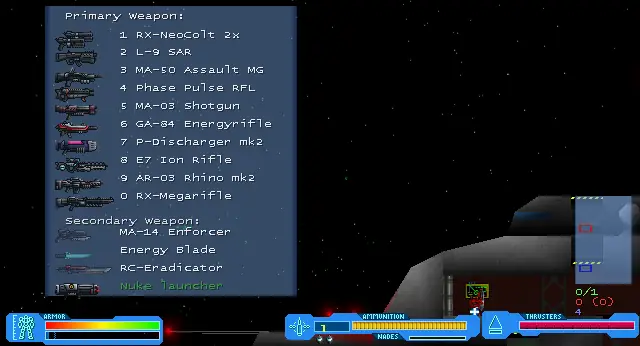
My changes weren't impressive or comparable to trained artists, but I was nevertheless excited by them personally and they made me happy because I had achieved something cool myself and to me they were impressive changes and more personalized to my own tastes, which only I can really cater to. It was worth the effort to me.
You should try it too, it can be a lot of fun
That's how things started for me and I think how it starts for many people out there going into any kind of creative profession - they just experiment and play around, regardless of anyone's opinions, standards or comparison. They just do it for themselves and admire that they too can actually do something as an active participant and not simply be a passive observer.
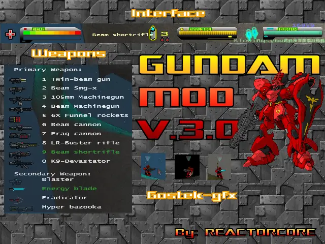
This initial excitement gradually turns into a hobby and then a passion as I continue to try new things, improving my creations and pushing my own boundaries of what I can do. It feels satisfying, meaningful and interesting - I grow as a person and become better as I create stuff.
If you've never done game development before or done anything remotely creative before, this is what you should be looking for - opportunities like the ones I found for myself that lined up with what I personally enjoyed. It may not be the platform I stuck with, but it gave me that initial spark to believe in myself.
For you, this can either be trying to create mods or skins for existing games for just picking up the easiest game engine you can find and following the tutorials to create silly experiments for the fun of it. Your goal is just to enjoy yourself without worrying about deadlines or goals. Just make as big of a mess as you can and have fun creating something absurd, ridiculous or funny.
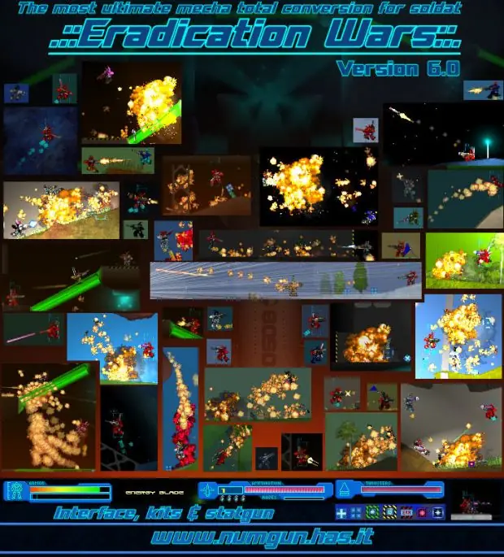
If you share those early creations online in places where those things are welcomed, you may encounter people that will offer gratitude, suggestions, feedback and even create fan-content based on your work if it's good enough.
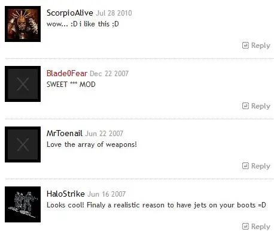
This can be quite fun and motivating to keep working on more experiments and seeing how people react to them. It may even open doors for future career options if you keep posting your stuff and sharing it around wherever it is acceptable.
Making Mods vs Making Games - Comparison and warnings
Most of the time, modding comes with these limitations
- You cannot monetize your mod and the modding community as well as the developer of the original game expects your mods to be released for free or they may cancel, ban you, take legal action to put an end to you trying to make money. The mentality in those circles can be deeply entrenched and may be exceptionally difficult to change or fight against. If you're thinking about making a career with building mods, you need to find out about this beforehand. If you see hesitation on the topic of monetization by either the community or the original dev, that's a red flag and you should assume it's a dead end.
- Modding constrains you to what the game allows you to mod and your mods are limited by the limits of the game itself. It is often easier to make a new game than to try to reverse-engineer an existing one, especially if you have no support from the original developer, nor source code access, nor extensive documentation, nor whatever else was needed to compile/build the game or its assets.
- Anyone wanting to play your mod creation requires to have access to the original game you're using as a platform to deliver your mod on. This adds an extra step of friction for people to try your mod creations, which may discourage many people from trying it due to the additional hassle and hoops they may need to jump through to install the game and then install your mod on top of. Depending on how the modding works on a game, it could make the original game no longer work unmodded unless the entire game is reinstalled, which can also be a negative to anyone wanting to try your mod.
- Unfortunately in effort in trying to circumvent the above point, you could be seen as promoting piracy or violating copyright if you try to make it easy for people to get your mod by packaging the game with your mods already preinstalled on it - so that all they'd have to do is install and play that with no extra steps needed. Depending on how egoistic the original developer is, they could harass you because of their fragile ego and insecurities - even if their game was literally free today or abandoned long ago. Some people can get a feeling of poisonous envy and bitterness if someone else starts making significant money and gaining greater popularity through the modded game you worked hard on than what the original vanilla game was able to achieve and earn back when it was alive. If this sounds absurd and you noticed how this prevents players from having the best experience possible then you've understood correctly and it is the reason why copyright and ownership harms creativity and should be abolished.
Making games comes with different hardships
- While modding is limited, it does however provide a ready framework that you can immediately use to create content for an existing game world without having to create all the infrastructure yourself from scratch. If you're going to make a game and you want it to have all the functionality of that game you were modding, well... thats gonna be a lot of basics you'll have to build from ground up to serve as a foundation before you can even make the first piece of playable content for your game. It’s a lot of work. A very large amount of work.
- An existing modding scene in an existing game often means the game already has people playing, liking and being generally aware of the game, which can be helpful in gaining visibility for the work you do faster by creating a mod than it would be to do via a fresh new game that no one has heard of yet. You'd essentially be utilizing the marketing done for the original game as a piggy-back ride to have an existing audience of the game see your work with less effort needed to do marketing yourself from scratch - which is something you'll have to do if you try to build a new game from scratch yourself. Again, marketing is a lot of tricky and creative work too.
- An existing game already comes with existing game design, so as a modder you can - to some degree - turn your brain off and just make stuff fairly easily without having to actually think about design as you create content because you can often just mimic existing content and merely change some values in a configuration file and change the graphics/sounds to get your work done. In a game made from scratch, again, you'd have to do the hard work of figuring out game design decisions as well as creating all the systems, features, mechanics, rules and standards from scratch. Depending on the complexity of the game, this work can be significantly harder than modding. Not only is it a lot of work, but it may end up being quite hard work too.
Caveat: You already have made something creative elsewhere, but you now want to try game dev
To put things into perspective, I was 13 years old in the above story - so rather young and lacking in experience in many things. I was also under strict control that crushed my creativity for the longest time that it was only then when I had my first touch with doing anything creative.
I don't know who reads my articles age-wise, but I know that there are people that have had a creative hobby elsewhere that has already provided them with the self-esteem and spark for creating something themselves, just not in the realm of game development but now they're looking for a way to get started in game development.
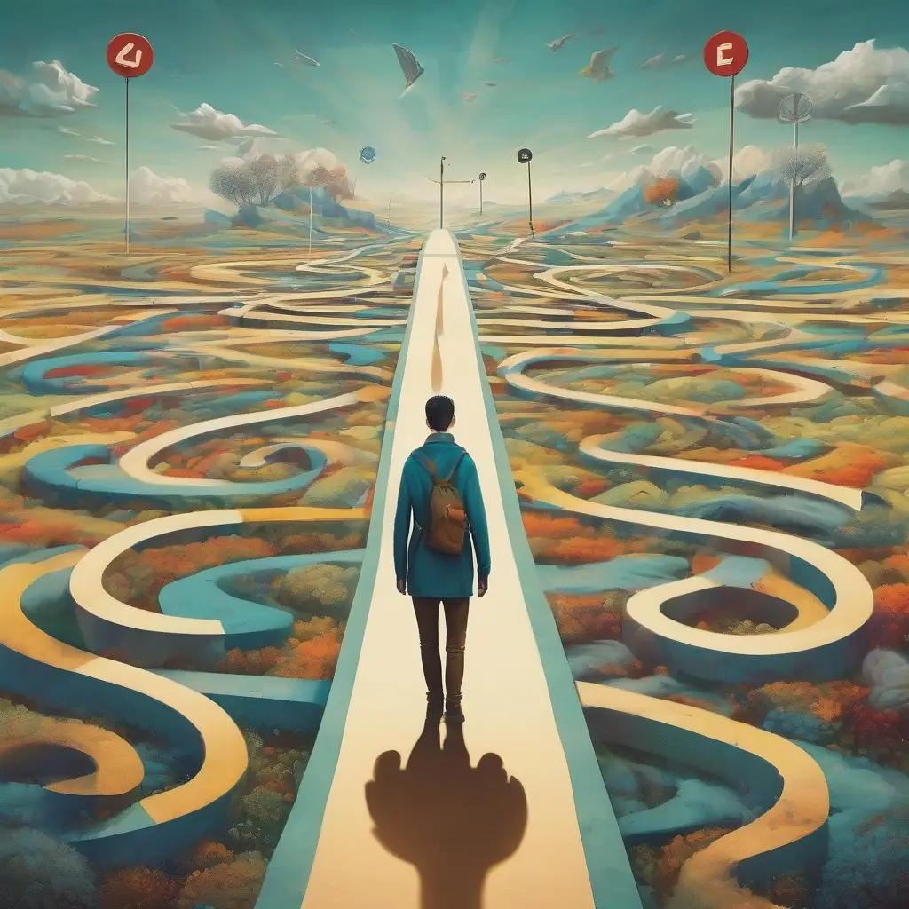
For such people - if you happen to be one - the beginning is a bit different. You are more mature and have more experience. You don't need or want to mess around - you already did that elsewhere and it no longer interests you perhaps. You may even have a clear dream or vision of what you'd like to make.
In that case, you'll want to grab yourself the easiest and most accessible game engine you can learn and feel comfortable with and begin building your dream project, no matter how big it is, immediately… but with the caveat of making it intelligently in a reduced Minimum Viable Product (MVP) form. Look it up online if you've never heard of that term before.
The way this works is that first you need to search what game engines are out there and look and try them all out. Do not underestimate any of them and be prepared to swallow your pride in having to settle for simpler solutions than what the ultimate version of your game would look like in your mind.
You need to compare these different platforms/engines, technologies, pricing/costs, trust factor, longevity, rules and restriction, and the educational material they currently provide like documentation and tutorials. You'll notice some options are worse than others.
When comparing them, don’t try to find which one of them “looks stronger”, “bigger” or “advanced”. You need to compare them based on what YOU will find most comfortable, easy to work with, easy to learn, best suited for your project while taking into account the resources and skill level you have. Go where the fence is the lowest, take the path of least resistance, stick with what is comfortable for you.
Also notice that more complex and detailed assets (graphics, audio, music, writing, etc) means more work. More hard work. More slower work. Therefore take the time to choose your tech and direction wisely.
This will take some time but eventually you'll narrow down to one solution that is simply better than the rest. That's the one you'll need to commit to and begin learning to get the necessary skills and experience to build your dream in a progressive, modular or iterative way where you first start making your dream game as a barebones ultra-light ultra-simple version and from there, as you gain knowledge and experience with working on the engine, studying more tutorials and diving deeper into the documentation, you'll get better understanding for how to expand and upgrade your dream game closer to its ultimate form.
If your vision or dream is fuzzy or not 100% solid, you may benefit from creating a series of throwaway experimental toys and prototypes that either just help you learn the engine you chose or help you validate or disprove the ideas you were thinking of implementing into your dream game.
You might even enjoy simply making experiments and prototypes as they give you new insights that might derail you in a fun direction that you didn't consider before and maybe they will lead you to making something even better than what your original plan was.
Word of caution - the early stages may be lonely and thankless
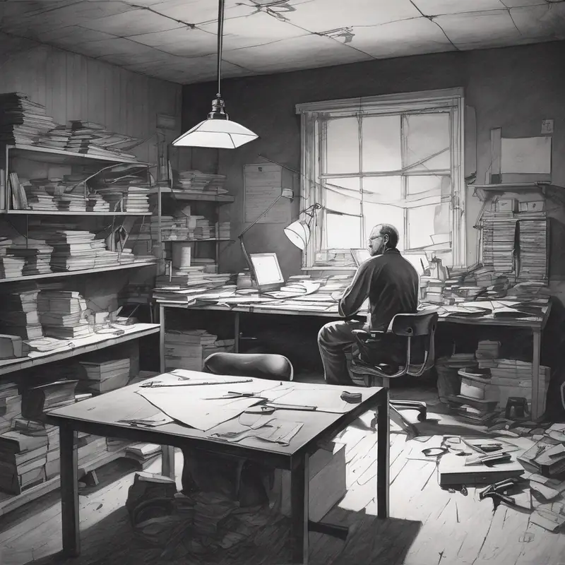
Don't expect anyone to help you unless they're your loving family or your best friend with spare time and you have enough charisma and courage to ask them to help you.
If you have (a lot) spare money, you might be able to hire other people either to work in a particular role (artist, coder, etc.) or you could pay a game studio/consultancy company to either build the game for you or work with you on the game as a subcontractor.
Because game dev work is often complicated, slow and full of annoying obstacles of all kinds, it's often much easier to motivate others to join your project after you have managed to build it up yourself to a point where it's somewhat playable and a stranger could see the potential in it.
Prior to that, everyone will essentially spit at you if you try asking people onboard. It's not fair that you need to do a lot of work upfront without any compensation to be accepted by others, but the proposition to go work on something vague (to them) is seen as too risky and laborious to be worth going into, hence why working solo is the best way to start in the early stage.
And no, scamming others to do work for you is not okay. Any short term gains acquired through being a dick will result in lifelong nightmares, spite and becoming even more lonely and discriminated by others.
Always build your relationships on trust, fairness, honesty and vulnerability; they last longer, are more genuine, more authentic and infinitely more rewarding.
Don't be discouraged, this career can make you more powerful than you can ever imagine
I hope this doesn't deter you from getting into game dev; I hope the potential in the vision/dream you have is stronger than the realities and obstacles you'll face in making a game.
If you pull it off successfully, you'll have a satisfying career that gets progressively easier the farther you get into it. You'll also have the power to create interactive experiences that feel far more powerful and versatile than passive media - books, comics, music, movies, video, etc.
You may even discover using game dev skills in app development for creating useful software that allow people to do extraordinary things or make their lives easier in some way.
And of course, games are just fucking awesome which is why you're here to begin with. If you find a perfect match with an engine/platform of your choice that you commit to, the things you can create comfortably and plentifully within that environment once you've gained mastery may feel like a godlike power.
Talk about it
Questions, disagreements and ideas of your own are all welcome. Discuss this article with other readers on the Reactorcore Games Discord, follow new articles and dev news on Patreon, or write to me directly.